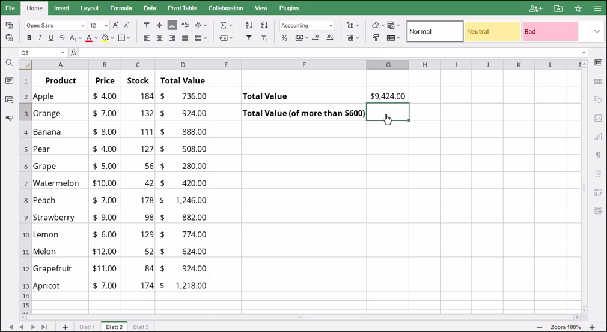

SUMIF Funkcija
SUMIF funkcija je jedna od funkcija za matematiku i trigonometriju. Koristi se za sabiranje svih brojeva u odabranom opsegu ćelija na osnovu zadatog kriterijuma i vraća rezultat.
Sintaksa
SUMIF(range, criteria, [sum_range])
SUMIF funkcija ima sledeće argumente:
| Argument | Opis |
|---|---|
| range | Odabrani opseg ćelija na koji se primenjuje kriterijum. |
| criteria | Kriterijum koji određuje koje ćelije se sabiraju; vrednost uneta ručno ili referencirana iz druge ćelije. |
| sum_range | Opseg ćelija koje će biti sabrane. Ovo je opcioni argument; ako se izostavi, funkcija će sabrati brojeve iz range. |
Napomene
Prilikom definisanja kriterijuma možete koristiti džoker karaktere. Upitnik "?" može zameniti bilo koji pojedinačni karakter, a zvezdica "*" može zameniti bilo koji broj karaktera.
Kako primeniti SUMIF funkciju.
Primeri
Slika ispod prikazuje rezultat koji vraća SUMIF funkcija.
